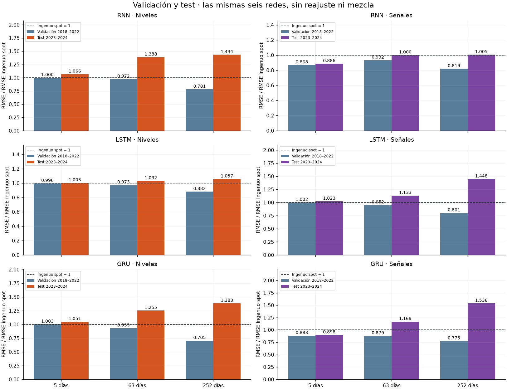
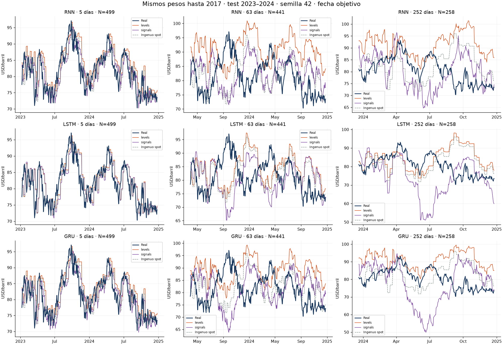
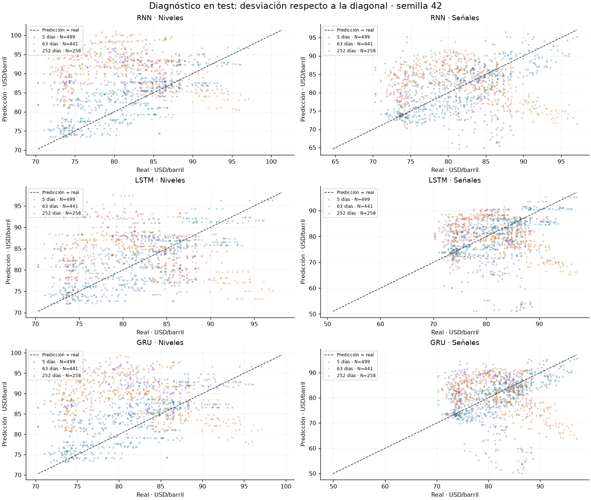

Se evalúan los seis modelos exactos de la captura: RNN, LSTM y GRU con niveles y señales, semilla 42. Son los pesos y escalas ajustados hasta 2017, sin reentrenamiento, promedio de semillas ni mezcla con el ingenuo. La época de esos pesos se eligió con validación 2018–2022.
Este bloque 2023–2024 ya se había evaluado con otra versión del modelo; aquí se realiza una comparación adicional de seis redes recuperadas.
Semilla 42 en ambos bloques. Las cifras de validación son de una sola semilla, no las medias de otros informes. 2/6 redes mejoran el RMSE spot a 5 días; 1/6 redes mejoran el RMSE spot a 63 días; 0/6 redes mejoran el RMSE spot a 252 días.
| architecture | variant | seed | validation_5 | validation_63 | validation_252 | test_5 | test_63 | test_252 |
|---|---|---|---|---|---|---|---|---|
| RNN | levels | 42 | 0.9997 | 0.9721 | 0.7805 | 1.0661 | 1.3880 | 1.4339 |
| RNN | signals | 42 | 0.8682 | 0.9323 | 0.8187 | 0.8856 | 0.9996 | 1.0046 |
| LSTM | levels | 42 | 0.9957 | 0.9731 | 0.8820 | 1.0032 | 1.0321 | 1.0567 |
| LSTM | signals | 42 | 1.0018 | 0.9516 | 0.8012 | 1.0234 | 1.1329 | 1.4475 |
| GRU | levels | 42 | 1.0033 | 0.9333 | 0.7053 | 1.0508 | 1.2549 | 1.3835 |
| GRU | signals | 42 | 0.8832 | 0.8789 | 0.7752 | 0.8977 | 1.1691 | 1.5363 |
Ratio spot = RMSE del modelo / RMSE de mantener el último Brent spot publicado en el origen. Ratio futuros = RMSE del modelo / RMSE de mantener el último cierre de futuros conocido en el origen. Un ratio menor que 1 mejora esa referencia en ese bloque y métrica; no mide rentabilidad. MAE y RMSE se expresan en USD/barril; MSE en (USD/barril)². R² puede ser negativo incluso cuando se mejora al ingenuo. Ninguna de las seis redes mejora al ingenuo de futuros en los tres horizontes.

La disposición reproduce la captura: filas RNN/LSTM/GRU; columnas 5/63/252 días; niveles y señales en cada panel. Cada punto fue predicho desde un origen anterior.

| architecture | variant | horizon | n | mae | mse | rmse | r2 | relative_rmse | relative_rmse_vs_future |
|---|---|---|---|---|---|---|---|---|---|
| RNN | levels | 5 | 499 | 3.6737 | 21.9499 | 4.6851 | 0.3600 | 1.0661 | 1.3000 |
| RNN | levels | 63 | 441 | 11.1630 | 160.9460 | 12.6864 | -3.3847 | 1.3880 | 1.4905 |
| RNN | levels | 252 | 258 | 11.2217 | 182.6680 | 13.5155 | -5.3758 | 1.4339 | 1.5425 |
| RNN | signals | 5 | 499 | 3.1266 | 15.1453 | 3.8917 | 0.5584 | 0.8856 | 1.0798 |
| RNN | signals | 63 | 441 | 7.5916 | 83.4733 | 9.1364 | -1.2741 | 0.9996 | 1.0734 |
| RNN | signals | 252 | 258 | 7.7594 | 89.6678 | 9.4693 | -2.1297 | 1.0046 | 1.0807 |
| LSTM | levels | 5 | 499 | 3.4558 | 19.4368 | 4.4087 | 0.4333 | 1.0032 | 1.2233 |
| LSTM | levels | 63 | 441 | 7.9972 | 88.9778 | 9.4328 | -1.4241 | 1.0321 | 1.1082 |
| LSTM | levels | 252 | 258 | 7.9687 | 99.2009 | 9.9600 | -2.4625 | 1.0567 | 1.1367 |
| LSTM | signals | 5 | 499 | 3.5331 | 20.2266 | 4.4974 | 0.4103 | 1.0234 | 1.2479 |
| LSTM | signals | 63 | 441 | 8.2209 | 107.2210 | 10.3548 | -1.9211 | 1.1329 | 1.2166 |
| LSTM | signals | 252 | 258 | 10.4422 | 186.1680 | 13.6443 | -5.4979 | 1.4475 | 1.5573 |
| GRU | levels | 5 | 499 | 3.6231 | 21.3226 | 4.6176 | 0.3783 | 1.0508 | 1.2813 |
| GRU | levels | 63 | 441 | 10.0829 | 131.5568 | 11.4698 | -2.5841 | 1.2549 | 1.3476 |
| GRU | levels | 252 | 258 | 10.8691 | 170.0540 | 13.0405 | -4.9355 | 1.3835 | 1.4883 |
| GRU | signals | 5 | 499 | 3.2000 | 15.5634 | 3.9450 | 0.5462 | 0.8977 | 1.0946 |
| GRU | signals | 63 | 441 | 8.5361 | 114.1710 | 10.6851 | -2.1104 | 1.1691 | 1.2554 |
| GRU | signals | 252 | 258 | 11.6655 | 209.7082 | 14.4813 | -6.3196 | 1.5363 | 1.6528 |
| architecture | variant | horizon | group | n | rmse | r2 | relative_rmse |
|---|---|---|---|---|---|---|---|
| RNN | levels | 5 | target_year_2023 | 247 | 5.2587 | 0.2600 | 1.0627 |
| RNN | levels | 5 | target_year_2024 | 252 | 4.0446 | 0.4415 | 1.0718 |
| RNN | levels | 63 | target_year_2023 | 189 | 12.6308 | -2.6769 | 1.1568 |
| RNN | levels | 63 | target_year_2024 | 252 | 12.7281 | -4.5313 | 1.6891 |
| RNN | levels | 252 | target_year_2023 | 6 | 11.9967 | -95.1093 | 8.5329 |
| RNN | levels | 252 | target_year_2024 | 252 | 13.5496 | -5.2684 | 1.4210 |
| RNN | signals | 5 | target_year_2023 | 247 | 4.3280 | 0.4988 | 0.8746 |
| RNN | signals | 5 | target_year_2024 | 252 | 3.4103 | 0.6029 | 0.9038 |
| RNN | signals | 63 | target_year_2023 | 189 | 11.0577 | -1.8181 | 1.0128 |
| RNN | signals | 63 | target_year_2024 | 252 | 7.3738 | -0.8565 | 0.9786 |
| RNN | signals | 252 | target_year_2023 | 6 | 7.2042 | -33.6589 | 5.1241 |
| RNN | signals | 252 | target_year_2024 | 252 | 9.5167 | -2.0923 | 0.9981 |
| LSTM | levels | 5 | target_year_2023 | 247 | 4.9610 | 0.3414 | 1.0026 |
| LSTM | levels | 5 | target_year_2024 | 252 | 3.7901 | 0.5095 | 1.0044 |
| LSTM | levels | 63 | target_year_2023 | 189 | 10.8247 | -1.7006 | 0.9914 |
| LSTM | levels | 63 | target_year_2024 | 252 | 8.2359 | -1.3159 | 1.0930 |
| LSTM | levels | 252 | target_year_2023 | 6 | 1.6512 | -0.8208 | 1.1745 |
| LSTM | levels | 252 | target_year_2024 | 252 | 10.0746 | -2.4655 | 1.0566 |
| LSTM | signals | 5 | target_year_2023 | 247 | 5.0797 | 0.3095 | 1.0265 |
| LSTM | signals | 5 | target_year_2024 | 252 | 3.8420 | 0.4960 | 1.0182 |
| LSTM | signals | 63 | target_year_2023 | 189 | 12.5694 | -2.6413 | 1.1512 |
| LSTM | signals | 63 | target_year_2024 | 252 | 8.3153 | -1.3608 | 1.1035 |
| LSTM | signals | 252 | target_year_2023 | 6 | 6.1746 | -24.4598 | 4.3918 |
| LSTM | signals | 252 | target_year_2024 | 252 | 13.7729 | -5.4768 | 1.4445 |
| GRU | levels | 5 | target_year_2023 | 247 | 5.1424 | 0.2924 | 1.0392 |
| GRU | levels | 5 | target_year_2024 | 252 | 4.0377 | 0.4434 | 1.0700 |
| GRU | levels | 63 | target_year_2023 | 189 | 11.6633 | -2.1352 | 1.0682 |
| GRU | levels | 63 | target_year_2024 | 252 | 11.3226 | -3.3772 | 1.5026 |
| GRU | levels | 252 | target_year_2023 | 6 | 11.4687 | -86.8363 | 8.1574 |
| GRU | levels | 252 | target_year_2024 | 252 | 13.0756 | -4.8375 | 1.3713 |
| GRU | signals | 5 | target_year_2023 | 247 | 4.4036 | 0.4811 | 0.8899 |
| GRU | signals | 5 | target_year_2024 | 252 | 3.4367 | 0.5967 | 0.9107 |
| GRU | signals | 63 | target_year_2023 | 189 | 13.5976 | -3.2614 | 1.2454 |
| GRU | signals | 63 | target_year_2024 | 252 | 7.8184 | -1.0871 | 1.0376 |
| GRU | signals | 252 | target_year_2023 | 6 | 7.0711 | -32.3899 | 5.0295 |
| GRU | signals | 252 | target_year_2024 | 252 | 14.6120 | -6.2900 | 1.5325 |
A 252 días hay 258 pares por modelo, con destinos muy solapados y mayoritariamente en 2024. No equivalen a 258 pruebas anuales independientes.
El umbral se fijó antes del test. Los errores en orígenes habituales también cuentan en el total; un shock puede llegar después de un origen tranquilo.
| architecture | variant | horizon | group | n | rmse | r2 | relative_rmse |
|---|---|---|---|---|---|---|---|
| RNN | levels | 5 | origin_high_volatility | 26 | 2.8973 | 0.7387 | 1.1187 |
| RNN | levels | 5 | origin_usual | 473 | 4.7639 | 0.3296 | 1.0651 |
| RNN | levels | 63 | origin_high_volatility | 11 | 14.1454 | -52.2605 | 1.7352 |
| RNN | levels | 63 | origin_usual | 430 | 12.6469 | -3.2949 | 1.3801 |
| RNN | levels | 252 | origin_high_volatility | 9 | 5.3829 | -3.0200 | 1.7508 |
| RNN | levels | 252 | origin_usual | 249 | 13.7194 | -5.8430 | 1.4326 |
| RNN | signals | 5 | origin_high_volatility | 26 | 2.7054 | 0.7722 | 1.0446 |
| RNN | signals | 5 | origin_usual | 473 | 3.9466 | 0.5399 | 0.8824 |
| RNN | signals | 63 | origin_high_volatility | 11 | 11.6650 | -35.2194 | 1.4310 |
| RNN | signals | 63 | origin_usual | 430 | 9.0624 | -1.2053 | 0.9890 |
| RNN | signals | 252 | origin_high_volatility | 9 | 6.2707 | -4.4552 | 2.0396 |
| RNN | signals | 252 | origin_usual | 249 | 9.5649 | -2.3261 | 0.9987 |
| LSTM | levels | 5 | origin_high_volatility | 26 | 2.6020 | 0.7893 | 1.0047 |
| LSTM | levels | 5 | origin_usual | 473 | 4.4870 | 0.4053 | 1.0032 |
| LSTM | levels | 63 | origin_high_volatility | 11 | 9.5209 | -23.1285 | 1.1679 |
| LSTM | levels | 63 | origin_usual | 430 | 9.4305 | -1.3881 | 1.0291 |
| LSTM | levels | 252 | origin_high_volatility | 9 | 2.6997 | -0.0112 | 0.8781 |
| LSTM | levels | 252 | origin_usual | 249 | 10.1254 | -2.7273 | 1.0573 |
| LSTM | signals | 5 | origin_high_volatility | 26 | 2.6284 | 0.7850 | 1.0148 |
| LSTM | signals | 5 | origin_usual | 473 | 4.5781 | 0.3809 | 1.0236 |
| LSTM | signals | 63 | origin_high_volatility | 11 | 9.2277 | -21.6654 | 1.1320 |
| LSTM | signals | 63 | origin_usual | 430 | 10.3820 | -1.8943 | 1.1329 |
| LSTM | signals | 252 | origin_high_volatility | 9 | 3.4945 | -0.6942 | 1.1366 |
| LSTM | signals | 252 | origin_usual | 249 | 13.8728 | -5.9969 | 1.4486 |
| GRU | levels | 5 | origin_high_volatility | 26 | 2.8357 | 0.7497 | 1.0949 |
| GRU | levels | 5 | origin_usual | 473 | 4.6960 | 0.3486 | 1.0499 |
| GRU | levels | 63 | origin_high_volatility | 11 | 12.6820 | -41.8107 | 1.5557 |
| GRU | levels | 63 | origin_usual | 430 | 11.4371 | -2.5125 | 1.2481 |
| GRU | levels | 252 | origin_high_volatility | 9 | 6.3897 | -4.6643 | 2.0783 |
| GRU | levels | 252 | origin_usual | 249 | 13.2184 | -5.3523 | 1.3802 |
| GRU | signals | 5 | origin_high_volatility | 26 | 2.6587 | 0.7800 | 1.0266 |
| GRU | signals | 5 | origin_usual | 473 | 4.0038 | 0.5265 | 0.8952 |
| GRU | signals | 63 | origin_high_volatility | 11 | 9.8998 | -25.0872 | 1.2144 |
| GRU | signals | 63 | origin_usual | 430 | 10.7044 | -2.0769 | 1.1681 |
| GRU | signals | 252 | origin_high_volatility | 9 | 3.9876 | -1.2060 | 1.2970 |
| GRU | signals | 252 | origin_usual | 249 | 14.7212 | -6.8788 | 1.5371 |

Las bandas simétricas nominales del 80 % utilizan, por red y horizonte, el cuantil 80 % de los errores absolutos guardados en validación. Esa validación también intervino en la selección de la época; sus muestras se solapan. Son bandas empíricas, sin garantía conformal ni garantía de cobertura futura. No se ajusta su amplitud con el test.
| architecture | variant | horizon | n | interval_coverage | interval_mean_width |
|---|---|---|---|---|---|
| RNN | levels | 5 | 499 | 0.8357 | 12.6261 |
| RNN | levels | 63 | 441 | 0.6825 | 29.3893 |
| RNN | levels | 252 | 258 | 1.0000 | 60.1439 |
| RNN | signals | 5 | 499 | 0.8056 | 10.2275 |
| RNN | signals | 63 | 441 | 0.9433 | 32.7709 |
| RNN | signals | 252 | 258 | 1.0000 | 57.7197 |
| LSTM | levels | 5 | 499 | 0.8437 | 12.3823 |
| LSTM | levels | 63 | 441 | 0.9206 | 32.4565 |
| LSTM | levels | 252 | 258 | 1.0000 | 64.7359 |
| LSTM | signals | 5 | 499 | 0.8156 | 12.1450 |
| LSTM | signals | 63 | 441 | 0.8980 | 31.4507 |
| LSTM | signals | 252 | 258 | 0.9225 | 59.0376 |
| GRU | levels | 5 | 499 | 0.8497 | 12.7236 |
| GRU | levels | 63 | 441 | 0.7234 | 28.1389 |
| GRU | levels | 252 | 258 | 0.9806 | 52.0295 |
| GRU | signals | 5 | 499 | 0.7856 | 10.2276 |
| GRU | signals | 63 | 441 | 0.9025 | 31.4875 |
| GRU | signals | 252 | 258 | 0.9186 | 55.8370 |
La cobertura es una fracción de 0 a 1; la anchura se expresa en USD/barril. Una cobertura alta con bandas amplias no implica gran precisión.
| horizon | test_origin_days | targets_inside_test_calendar | n | outside_target_calendar | missing_or_unpublished_target |
|---|---|---|---|---|---|
| 5 | 522 | 517 | 499 | 5 | 18 |
| 63 | 522 | 459 | 441 | 63 | 18 |
| 252 | 522 | 270 | 258 | 252 | 12 |
Los horizontes cuentan lunes a viernes, incluidos festivos. Se excluyen destinos sin precio válido publicado al cierre y los que caen fuera de 2024; no se rellenan etiquetas.
Predicciones · Métricas · Comparación CSV · Plan · Verificación de pesos